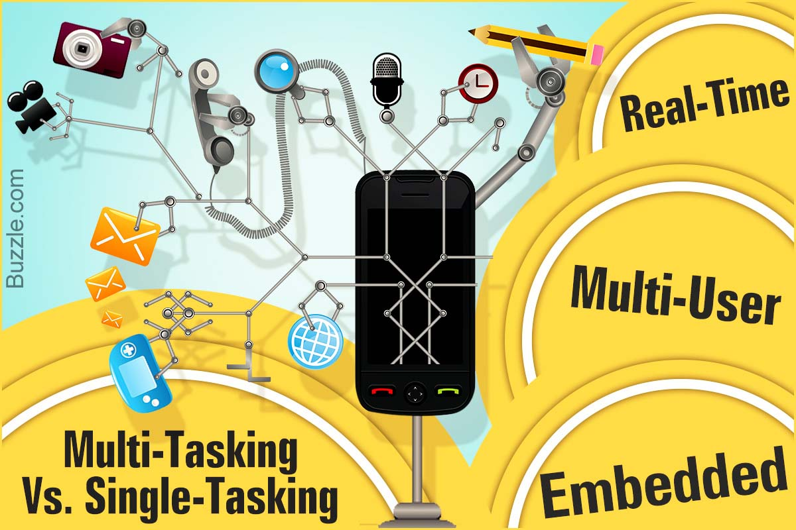

Multi-Tasking and Single-Tasking
A single tasking system is only able to run a single program at a time. A mutli-tasking os gives greater than one program to run simultaneously. This can be done through time-sharing wherein available processor time is divied between more than one process. The processes are repetitively interrupted via time slices by a subsystem which task schedules.
Multi user and Single User
No facilities to distinguish users are had by single-user operating system, however they might allow more than one program to run at a time. Multiple user operating systems extend the simple concept of multi-tasking, having faculties which highlight resources and processes like disk space which are the belonging of more than one user. The system allows multiple users to at one time interact with the system.
Distributed OS
Distributed operatings systems have the ability to manage an assortment of computers that are networked and allow them to look like a single computer. All computations are distributed.
Templating OS
THroughout the cloud computing and distributed side of an OS, templating involves making one virtual machine image as a guest OS. It is then used as a tool for more than one running virtual machines. The method is utilized in virtualization and management of cloud computing.
Embedded OS
Operating systems which are embedded are of the design to be in embedded computer systems. They are of the design to operate on machines of small size having less autonomy. They are incredibly compact and efficiently designed. They are capable of operating using limited amount of resources.